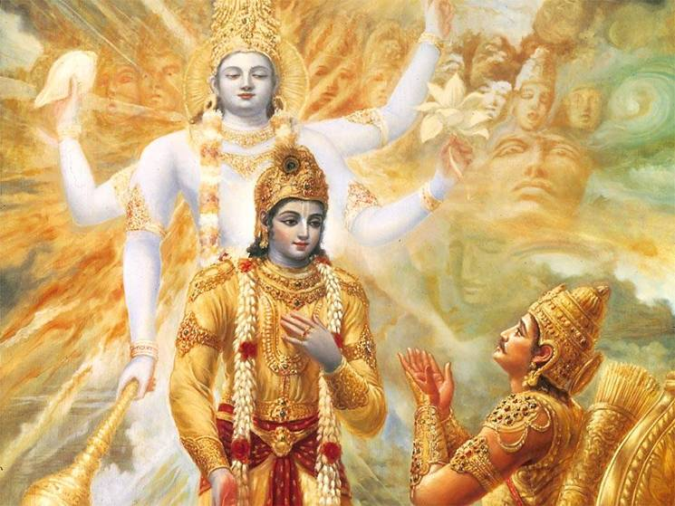
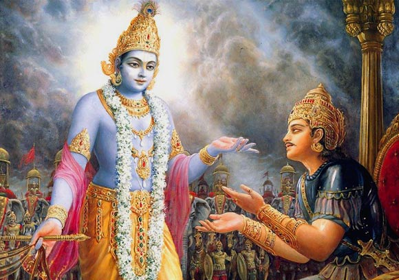

|  |
 |
His teacher,his advisor,his friend, his charioteer in the great war,his god ;Lord Krishna has been everything to Arjuna in Mahabharatha.As we go through the Mahabharatha, encounters of arjuna and krishna together get increased in number.Krishna is always there to save the day.But,have you ever wondered why krishna did that?Why so much affection??This story lists out several reasons for their friendship and answers to this question.
Well,the first reason is quite simple.Why did lord vishnu take birth as Lord Krishna? To destroy evil and establish dharma once again on earth.Hence,to do so Krishna would need weapons.In the Mahabharatha,Draupadi and Arjuna were portrayed as weapons for Krishna.Both were very crucial to krishna to establish dharma.Thus,everytime a grave situation develops for either of these,Krishna is always there to save the day.
The same applies to arjuna as well.Several events from mahabharatha show krishna's desperateness to compell arjuna to fight for dharma.The teaching of 'Bhagawad Gita' and depicting his destructive 'Vishwaroop' to arjuna are a few examples.Nonetheless he succeeded.
Another reason for their bonding is god's equality.To put it correctly it can be termed as nature's way of balancing things.Well,to understand what i mean lets go back to Treta Yuga when Rama helped Sugriva by killing his brother Vali.Sugriva was actually son of the Sun God.Thus,vishnu helped a man from solar dynasty.Now balancing would suggest that Vishnu should also help a person from 'Lunar Dynasty'(Sons of chandra-ChandraVamsis).And that is what happened in the dwapara yuga.Vishnu in the form of Krishna,supported Arjuna whose ancestors trail to the Lunar Dynasty.Thus balanced.
Balancing might not be a very convincing fact to you but,it happens in several instances.Now,Rama shot and killed Vali hiding behind a tree.So now balancing suggests that Vali should kill Vishnu in some form.And in dwapara yuga it happened.Krishna was shot by a Hunter who was Vali in treta yuga...........Again balanced......
To talk more about balancing,Kauravas had a master thinker 'Shakuni' their uncle.Now balancing suggests the same and Krishna occupies this position for the pandavas....
Some also argue that Arjun is actually a form of Lord Shiva.Now as Vishnu and Shiva admire each other in the celestial world,their friendship is still continued on earth..
Well,whatever the reason maybe,without Krishna the pandavas would have never been able to win the kurukshetra war...Well what do you think?? Life has a way of balancing things?? do let me know....